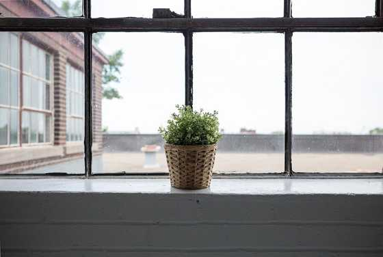
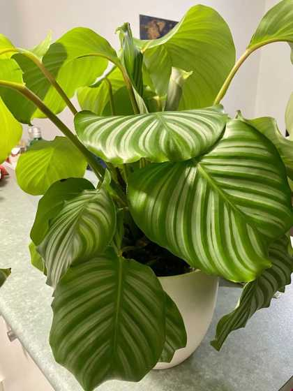
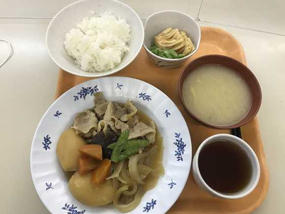
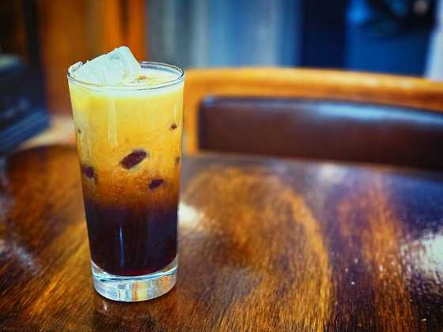
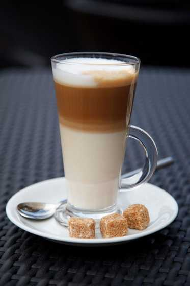
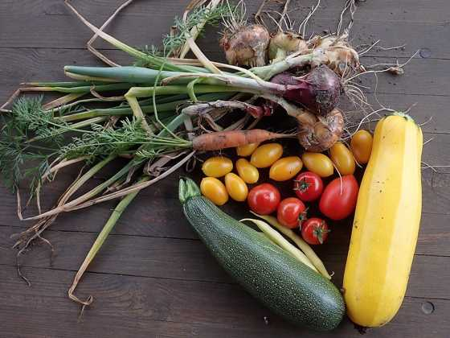
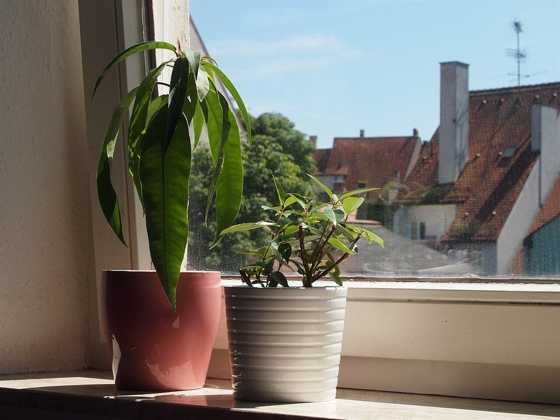
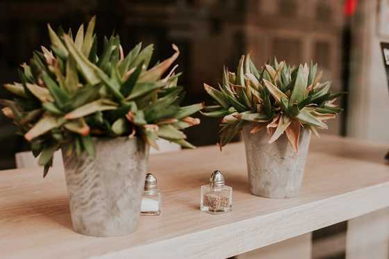
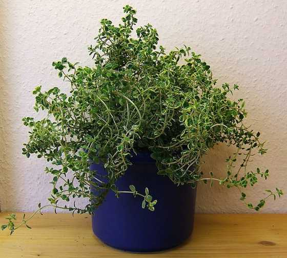
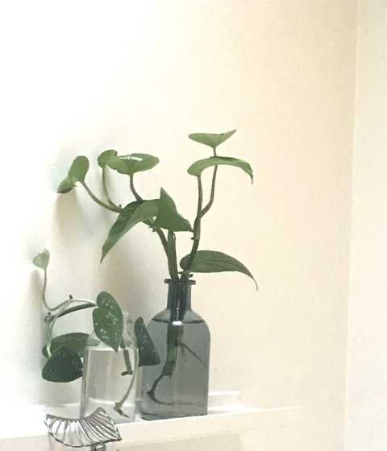

写真(イメージ): Amanda Mocci「Wicker plant and big window (Unsplash)」 CC0 1.0
お店の由来と想い
お店は2024年11月、長崎県五島市の富江商店街にオープンしました。昔は小さな鮮魚店だった場所を改装した喫茶です。
元公務員のオーナーさんは、商店街のお店が少しずつ閉まっていくのを見て、「それなら自分で作ろう」と決意されたと紹介されています。ゆっくりお茶を飲んで、ほっとくつろげる場所があったら。子育て中のお母さんが一人で悩まず、友達とおしゃべりして息抜きできる場所にしたい。そんな想いが込められているそうです。
平日の定食には、一人暮らしの高齢者や共働き家庭の子どもたちに、野菜で栄養をとってほしいという思いがあるとのこと。店内は緑を基調とした空間で、入口近くではアクセサリーなどの雑貨も扱っています。カウンター席とテーブル席のほか、一段上がった先にはキッズスペースやおむつ替えのスペースもあります。
毎月第2水曜日には、地域の人が集まっておしゃべりする「オレンジカフェ」も運営されています(8月・12月はお休み)。
出典: 五島商店 佐藤の芋屋の取材記事、食べログ等の掲載情報より。「よっこら処」という店名の意味そのものは確認できていません。

メニュー
紹介記事などで確認できた主なメニューです。写真はすべてイメージで、実際のお料理とは異なります。内容・価格は準備中です。

きまぐれ定食
平日限定野菜をたっぷり使った日替わりの定食。
価格: 準備中

クリームソーダ
ドリンク種類豊富なクリームソーダ。写真は冷たいドリンクのイメージです。
価格: 準備中

ワッフル
スイーツカフェメニューで人気とされています。ベリーかチョコのソースから選べます。写真は焼き菓子のイメージです。
価格: 準備中

カフェドリンク
ドリンクドリンクの詳細は準備中です。写真はイメージです。
価格: 準備中





口コミ
以下はサイト制作側が作った「イメージ例」で、実在のお客様の声ではありません。
商店街を歩いていて、ふらっと入りました。緑の多い店内で、ほっと一息つけました。
子連れでも気兼ねなく過ごせそうな雰囲気です。ゆっくりおしゃべりしたい日に。
平日のお昼に定食をいただきました。野菜が多くて、体にやさしい味でした。
アクセス・お店の情報
| 住所 | 〒853-0201 長崎県五島市富江町富江221番地 |
|---|---|
| 電話 | 準備中 |
| 営業時間 | 11:00〜16:00(L.O. 15:30)と紹介されています。変更の場合があります。 |
| 定休日 | 水曜日と紹介されています。変更の場合があるため、Instagramでご確認ください。 |
| 席数・駐車場 | 準備中 |
| @yocco_ra_sho |